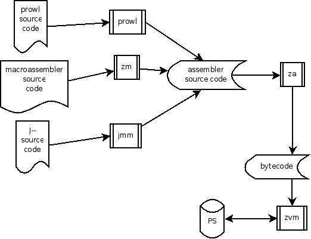

Máquina virtual Zero
|

|
Introducción
Este archivo contiene la especificación de la máquina virtual
Zero.
Aquellos elementos que aparezcan con un asterisco, significa que
todavía no son soportados.
La especificación del ensamblador Zero,
puede encontrarse aquí.
La máquina virtual debe:
- Ser multiplataforma.
- Proporcionar soporte nativo para números enteros.
- Proporcionar soporte nativo para números reales.
- Proporcionar soporte nativo para cadenas.
- Proporcionar soporte de persistencia.
- Proporcionar soporte de interfaz gráfica de usuario. *
- Proporcionar soporte para la interacción en red.*
- Proporcionar el soporte para la programación orientada a objetos
pura basada en prototipos.
Arquitectura de la máquina virtual

Existen tres formas de generar programas para la máquina virtual:
mediante el macroensamblador, mediante el lenguaje de programación
PROWL, y mediante el lenguaje de programación J--. Estos tres
compiladores generarn código fuente para el ensamblador, za, el backend del sistema. La máquina
virtual ejecuta entonces el bytecode, accediendo al almacenamiento
persistente cuando sea necesario.
Descripción de la máquina virtual

Registros
La máquina virtual maneja los siguientes registros:
- Acumulador: Proporciona un repositorio para gardar los resultados
de los mensajes enviados a los objetos.
- this: Señala al objeto que está ejecutando el
método.
- Propósito general: Guardan cualquier resultado intermedio.
Pueden ser
empleados libremente.
- Indicador de instrucciones: No se tiene acceso a él, a no
ser mediante los opcodes JMP, JOT, y JOF.
Referencias
La API es la lista de objetos y métodos
básicos que debe proveer la máquina virtual.
Nunca será necesario emplear estos métodos directamente, puesto
que
la librería estándar se encarga de interaccionar con la API de
forma
transparente para ofrecer una funcionalidad más directa.
VM
- getHiVersionNumber: devuelve
el número alto de la versión de la máquina Zero.
- getLoVersionNumber: devuelve
el número bajo de la versión de la máquina Zero.
- getPlatformName: devuelve el
nombre de la plataforma sobre la que se asienta la máquina
virtual Zero. Puede devolver los siguientes valores:
- getHiPlatformCode *: devuelve un
código según el hardware sobre la que se asienta la
máquina virtual Zero. Puede devolver los siguientes valores:
- getLoPlatformCode *: devuelve un
código según el SO sobre la que se asienta la máquina
virtual Zero. Puede devolver los siguientes valores:
- copyObject: Crea una copia de un
objeto.
- getNameOf: Devuelve el nombre de
un objeto.
- createChildOf: Crea un objeto
vacío, con su puntero
parent apuntando a un
objeto dado.
- compareReferences: Devuelve
verdadero si dos referencias
son iguales.
- getNumberOfMethodsOf: Devuelve el
número de métodos de un
objeto.
- getNameOf: Devuelve el nombre de
un objeto.
- getMethodNumberByNameYOfX:
Devuelve el índice de un método
dado por nombre.
- callMethodNumberOfObj: Ejecuta un
método dado por un índice.
- deleteMethodNumberYOfX: Elimina
un método dado por un
índice.
- getInfoOnMethodNumberYOfX:
Devuelve información
introspectiva de un método dado por un índice.
- getNameOfMethodNumberYOfX:
Devuelve el nombre
de un método dado por un índice.
- getAttributeNumberByNameYOfX:
Devuelve el índice de un
atributo según su nombre.
- getAttributeNumberYOfX: Devuelve
un método según su índice.
- getNumberOfAttributesOf: Devuelve
el número de atributos
de un objeto.
- addAttributeYOfXValueZ:
Añade un atributo a un objeto.
- deleteAttributeNumberYOfX:
Elimina un atributo de un
objeto, según su índice.
- getInfoOnAttributeNumberYOfX:
Devuelve información
introspectiva de un método según su índice.
- getNameOfAttributeNumberYOfX:
Devuelve el nombre
de un método según su índice.
VM.Console
- openDefaultConsole
- closeDefaultConsole
- lfDefaultConsole
- writeToDefaultConsole: Es una
función a la que se le pasa un
objeto de tipo LiteralString,
y lo imprime por pantalla.
En caso de producirse algún error, lanza la excepción EInternalError.
- readFromDefaultConsole: No toma
parámetros. Deja en el
acumulador un objeto de tipo LiteralString,
que consiste en la entrada capturada por teclado, hasta que el usuario
pulsó ENTER. Si se produce un error, lanza la excepción EInternalError.
VM.Float
- toString: Deja en el acumulador un
objeto de tipo LiteralString,
que consiste en la conversión de un objeto LiteralFloat,
pasado por parámetro, a cadena. Lanza la excepción EInternalError
en caso de que no exista suficiente memoria para crear el objeto.
- zero: No toma parámetros. Deja en
el acumulador un objeto de tipo LiteralFloat,
con valor 0. Lanza la excepción EInternalError
en caso de que no exista suficiente memoria para crear el objeto.
- isZero: Deja en el acumulador una
referencia a un objeto de tipo Conditional,
según si el objeto del acumulador es un flotante con valor 0 o
no. EInternalError
en caso de que el objeto no sea de tipo flotante.
- isNegative: Deja una referencia a
un objeto de tipo Conditional,
según si el objeto del acumulador es un flotante con valor
negativo o no. EInternalError
en caso de que el objeto no sea de tipo flotante.
- multiplyBy: Deja en el acumulador
un objeto de tipo LiteralFloat,
con valor de la multiplicación entre dos objetos pasados por
parámetro. Lanza la excepción EInternalError
en caso de que no exista suficiente memoria para crear el objeto.
Lanza la excepción EInternalError
en caso de que los objetos pasados por parámetro no sean
LiteralFloat.
- divideBy: Deja en el acumulador un
objeto de tipo LiteralFloat,
con valor de la división entre el objeto LiteralFloat que hace la
llamada y el objeto LiteralFloat que se pasa por el acumulador. Lanza
la excepción EInternalError
en caso de que no exista suficiente memoria para crear el objeto.
Lanza la excepción EInternalError
en caso de que "this" no sea una referencia a un flotante, o de que
suceda lo mismo con el que se pasa por el acumulador.
- sum: Deja en el acumulador un objeto de
tipo LiteralFloat,
con valor de la suma entre el objeto LiteralFloat que hace la llamada
y el objeto LiteralFloat que se pasa por el acumulador. Lanza la
excepción ENotEnoughMemory
en caso de que no exista suficiente memoria para crear el objeto.
Lanza la excepción ETypeMismatch
en caso de que "this" no sea un objeto albergando un flotante, o de
que suceda lo mismo con el que se pasa por el acumulador.
- substract: Deja en el
acumulador un objeto de tipo LiteralFloat,
con valor de la suma entre el objeto LiteralFloat que hace la llamada
y el objeto LiteralFloat que se pasa por el acumulador. Lanza la
excepción ENotEnoughMemory
en caso de que no exista suficiente memoria para crear el objeto.
Lanza la excepción ETypeMismatch
en caso de que "this" no sea un objeto albergando un flotante, o de
que suceda lo mismo con el que se pasa por el acumulador.
- abs: Deja en el acumulador un objeto de
tipo LiteralFloat,
con el valor absoluto del LiteralFloat que se pasa por el acumulador.
Lanza la excepción ENotEnoughMemory
en caso de que no exista suficiente memoria para crear el objeto.
Lanza la excepción ETypeMismatch
en caso de que "this" no sea un objeto albergando un flotante, o de
que suceda lo mismo con el que se pasa por el acumulador.
- parseString
- assign: Toma del acumulador un objeto
de tipo LiteralFloat,
y hace que el objeto this
tenga el mismo valor. Lanza la excepción ENotEnoughMemory
en caso de que no exista suficiente memoria para crear el objeto.
Lanza la excepción ETypeMismatch
en caso de que "this" no sea un objeto albergando un flotante, o de
que suceda lo mismo con el que se pasa por el acumulador.
- isEqualTo
- isLessThan
- isGreaterThan
VM.Int
- toString: Deja en el acumulador un
objeto de tipo LiteralString,
que consiste en la conversión de un objeto LiteralInt,
pasado por parámetro, a cadena. Lanza la excepción EInternalError
en caso de que no exista suficiente memoria para crear el objeto.
- zero: No toma parámetros. Deja en el
acumulador un objeto de tipo LiteralInt,
con valor 0. Lanza la excepción EInternalError
en caso de que no exista suficiente memoria para crear el objeto.
- isZero: Deja en el acumulador una
referencia a un objeto de tipo Conditional,
según si el objeto del acumulador es un flotante con valor 0 o
no. EInternalError
en caso de que el objeto no sea de tipo flotante.
- isNegative: Deja una referencia a
un objeto de tipo Conditional,
según si el objeto del acumulador es un flotante con valor
negativo o no. EInternalError
en caso de que el objeto no sea de tipo flotante.
- multiplyBy: Deja en el acumulador
un objeto de tipo LiteralInt,
con valor de la multiplicación entre dos objetos pasados por
parámetro. Lanza la excepción EInternalError
en caso de que no exista suficiente memoria para crear el objeto.
Lanza la excepción EInternalError
en caso de que los objetos pasados por parámetro no sean
LiteralInt.
- divideBy: Deja en el acumulador un
objeto de tipo LiteralInt,
con valor de la división entre el objeto LiteralInt que hace la
llamada y el objeto LiteralInt que se pasa por el acumulador. Lanza
la excepción EInternalError
en caso de que no exista suficiente memoria para crear el objeto.
Lanza la excepción EInternalError
en caso de que "this" no sea una referencia a un flotante, o de que
suceda lo mismo con el que se pasa por el acumulador.
- sum: Deja en el acumulador un objeto de
tipo LiteralInt,
con valor de la suma entre el objeto LiteralInt que hace la llamada y
el objeto LiteralInt que se pasa por el acumulador. Lanza
la excepción ENotEnoughMemory
en caso de que no exista suficiente memoria para crear el objeto.
Lanza la excepción ETypeMismatch
en caso de que "this" no sea un objeto albergando un flotante, o de
que suceda lo mismo con el que se pasa por el acumulador.
- substract: Deja en el acumulador
un objeto de tipo LiteralInt,
con valor de la suma entre el objeto LiteralInt que hace la llamada y
el objeto LiteralInt que se pasa por el acumulador. Lanza
la excepción ENotEnoughMemory
en caso de que no exista suficiente memoria para crear el objeto.
Lanza la excepción ETypeMismatch
en caso de que "this" no sea un objeto albergando un flotante, o de
que suceda lo mismo con el que se pasa por el acumulador.
- abs: Deja en el acumulador un objeto de
tipo LiteralInt,
con el valor absoluto del LiteralInt que se pasa por el acumulador.
Lanza la excepción ENotEnoughMemory
en caso de que no exista suficiente memoria para crear el objeto.
Lanza la excepción ETypeMismatch
en caso de que "this" no sea un objeto albergando un flotante, o de
que suceda lo mismo con el que se pasa por el acumulador.
- parseString
- assign: Toma del acumulador un objeto
de tipo LiteralInt,
y hace que el objeto this
tenga
el mismo valor. Lanza la excepción ENotEnoughMemory
en caso de que no exista suficiente memoria para crear el objeto.
Lanza la excepción ETypeMismatch
en caso de que "this" no sea un objeto albergando un flotante, o de
que suceda lo mismo con el que se pasa por el acumulador.
- isEqualTo
- isLessThan
- isGreaterThan
VM.String
- toFloat: Deja en el acumulador un
objeto de tipo LiteralFloat,
que consiste en la conversión de una cadena, en el acumulador, a
flotante. Lanza la excepción ENotEnoughMemory
en caso de que no exista suficiente memoria para crear el objeto.
Lanza la excepción EMath
en caso de que no la cadena no almacene realmente un flotante.
- isEqualTo
- isLessThan
- isGreaterThan
- assign
- zero
- isEmpty
- isZero
- getPosition
- toString
- sub
- length
- concat
- left
- right
VM.Stack
- toStringStack